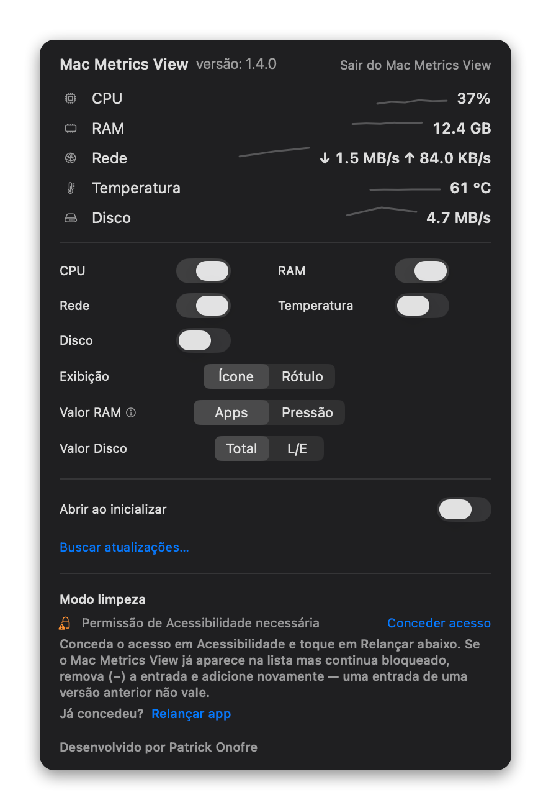

Modo limpeza
Trave teclado e trackpad por 15s a 5min para limpar a tela sem disparar cliques ou teclas. Requer permissão de Acessibilidade do macOS.
Versão 1.0 para macOS
Um app nativo e compacto para entender a pressão do seu Mac sem abrir o Monitor de Atividade.
Sem conta. Sem telemetria. Leitura local dos indicadores do sistema.

Versão 1.0
Trave teclado e trackpad por 15s a 5min para limpar a tela sem disparar cliques ou teclas. Requer permissão de Acessibilidade do macOS.
Ative no popover para o Mac Metrics View abrir sozinho ao iniciar a sessão no macOS. Reversível a qualquer momento.
A interface acompanha o idioma do sistema, em português ou inglês, sem configuração manual.
Feito para ficar quieto
Veja CPU, RAM e rede perto do relógio do macOS, com indicadores curtos e fáceis de escanear.
Clique no indicador para abrir detalhes recentes, alternar métricas e ajustar a exibição.
Mostre apenas o que importa. Métricas ocultas param de coletar novos dados.
Interface discreta, responsiva a claro e escuro, pensada para parecer parte do sistema.
O app verifica novas versões e instala atualizações assinadas no lugar, sem precisar voltar aqui. Você decide quando instalar, e os updates não disparam o aviso do Gatekeeper de novo.
Privacidade primeiro
O Mac Metrics View lê CPU, memória e contadores locais de rede. Ele não exige login, não envia telemetria e não depende de serviços externos para funcionar.
Download
Versão 1.0 para macOS (Apple Silicon). Na primeira abertura, o macOS pode pedir confirmação por ser um app ainda não notarizado — depois disso, o app se mantém atualizado sozinho.
Primeira abertura
Como o app ainda não é notarizado pela Apple, o macOS bloqueia a primeira execução por precaução — não é um erro nem sinal de malware. Libere o app uma única vez assim:
No aviso, escolha “OK” — nunca “Mover para o Lixo”. Isso apenas fecha o alerta sem apagar o app.
Em Ajustes do Sistema → Privacidade e Segurança, role até “MacMetricsView foi bloqueado” e clique em “Abrir Mesmo Assim”.
Autentique com Touch ID ou senha e clique em “Abrir”. Só é preciso fazer isso uma vez.
No macOS Ventura ou anterior: clique com o botão direito (ou Control+clique) no app e escolha “Abrir” — pule os passos 2 e 3 acima.
Isso só vale para esta primeira instalação manual. As próximas versões chegam pelo próprio app, com atualizações assinadas que não disparam o Gatekeeper de novo.